Kapitel 11 Bausteine
11.1 Aesthetics
Mit der Funktion aes() lässt sich das Aussehen der Grafik regeln (nicht der Inhalt). Wir können z.B.
- die Position:
xundy - die Farbe:
colorundfill - die Form:
shape - den Linientyp:
linetype - die Größe der Symbol:
size
festlegen. Nicht jedes aesthetic kann allerdings mit allen verfügbaren geoms kombiniert werden. So macht z.B. der linetype ja wenig Sinn in geom_point(). Ein Übersicht der möglichen aesthetics findet man in der Hilfe jeder geom-Funktion
geom_point {ggplot2} R Documentation
Points
Description
The point geom is used to create scatterplots. The scatterplot is most useful for displaying the relationship between two continuous variables. It can be used to compare one continuous and one categorical variable, or two categorical variables, but a variation like geom_jitter(), geom_count(), or geom_bin2d() is usually more appropriate. A bubblechart is a scatterplot with a third variable mapped to the size of points.
Usage
geom_point(
mapping = NULL,
data = NULL,
stat = "identity",
position = "identity",
...,
na.rm = FALSE,
show.legend = NA,
inherit.aes = TRUE
)
...
Aesthetics
geom_point() understands the following aesthetics (required aesthetics are in bold):
x
y
alpha
colour
fill
group
shape
size
stroke
Learn more about setting these aesthetics in vignette("ggplot2-specs").
In der aes() Funktion sollten die Daten den Wert der Argumente bestimmen. Werden Argumente auf fixe Werte gesetzt, so sind sie außerhalb der aes() Funktion zu setzen.
In einem Plot der gdpPercap Daten für Deutschland und Frankreich wollen wir anhand von unterschiedlichen Farben die Daten der beiden Länder unterscheiden. Dazu müssen wir nur colour innerhalb von aes() den Wert country zuweisen.
> gapminder %>%
+ filter(country %in% c("Germany","France")) %>% # auswählen der Daten
+ ggplot(aes(x = year, y = gdpPercap, colour = country)) +
+ geom_point(size = 3) # size wird auf einen fixen Wert gesetzt (außerhalb von aes())11.2 Geoms
Mit den geom_xx() Funktionen stellen wir die Daten als geometrische Formen in einer Grafik dar. Jede ggplot2 Grafik benötigt daher mindestens ein geom. Beispiele sind
geom_point()geom_line()geom_histogram()
Da wir nicht alle verfügbaren geoms auflisten können, sei an dieser Stelle auf die ggplot2 Seite verwiesen.
> gapminder %>%
+ ggplot(aes(x = year, y = gdpPercap)) +
+ geom_point()
>
>
> gapminder %>%
+ ggplot(aes(x = year, y = gdpPercap)) +
+ geom_smooth()
## `geom_smooth()` using method = 'gam' and formula 'y ~ s(x, bs = "cs")'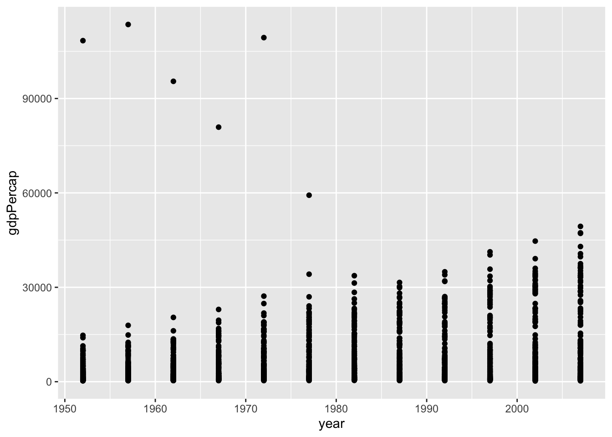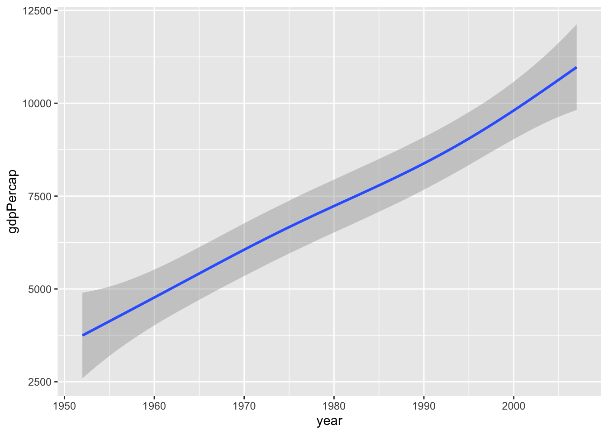
Wir haben hier die gleichen Daten visualisiert. Allerdings ist das Ergebnis doch recht unterschiedlich. Der Scatterplot zeigt alle (abgesehen von überzeichnen) Daten, wohingegen mit geom_smooth() eine geglätteter Zusammenhang dargestellt wird.
Interessant sind hier natürlich die wenigen großen gdpPercap Werte
> gapminder %>%
+ filter(gdpPercap > 50000)
## # A tibble: 6 x 6
## country continent year lifeExp pop gdpPercap
## <fct> <fct> <int> <dbl> <int> <dbl>
## 1 Kuwait Asia 1952 55.6 160000 108382.
## 2 Kuwait Asia 1957 58.0 212846 113523.
## 3 Kuwait Asia 1962 60.5 358266 95458.
## 4 Kuwait Asia 1967 64.6 575003 80895.
## 5 Kuwait Asia 1972 67.7 841934 109348.
## 6 Kuwait Asia 1977 69.3 1140357 59265.Kuwait hat über den gesamten Zeitraum hohe GDP Werte. Aber zu Beginn der Aufzeichnungen waren die Werte in Bezug auf die damals noch recht kleine Populationsgröße außergewöhnlich hoch.
Einem ggplot Objekt können wir nicht nur ein geom zuordnen. Prinzipiell können wir beliebig viele weitere geoms hinzufügen. Wir können also die gerade durchgeführte Glättung der Daten auch
direkt zum Scatterplot hinzufügen
> gapminder %>%
+ ggplot(aes(x = year, y = gdpPercap)) +
+ geom_point() +
+ geom_smooth()
## `geom_smooth()` using method = 'gam' and formula 'y ~ s(x, bs = "cs")'Wählen wir die Farbe der geometrischen Objekte anhand einer Faktorvariable, so erhalten wir automatisch eine entsprechende Legende
> gapminder %>%
+ ggplot(aes(x = year, y = gdpPercap)) +
+ geom_point(aes(colour = continent)) +
+ geom_smooth()
## `geom_smooth()` using method = 'gam' and formula 'y ~ s(x, bs = "cs")'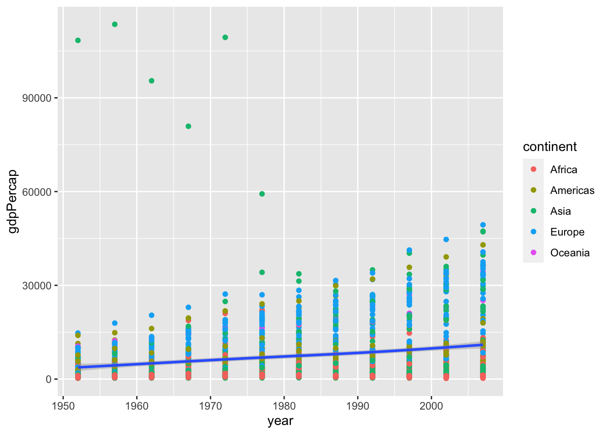
Beachte auch, dass wir colour nur für geom_point() gewählt haben. Die Glättung erfolgt weiterhin über alle Daten und nicht separat für jeden Kontinent. Aber das wäre natürlich auch möglich. Dazu können wir colour wieder global in ggplot() definieren.
> gapminder %>%
+ ggplot(aes(x = year, y = gdpPercap, colour = continent)) +
+ geom_point() +
+ geom_smooth()
## `geom_smooth()` using method = 'loess' and formula 'y ~ x'Die Punkte sind mir etwas zu groß und der Linientyp gefällt mir auch nicht in diesem Plot. Aber das lässt sich schnell ändern.
> gapminder %>%
+ ggplot(aes(x = year, y = gdpPercap, colour = continent)) +
+ geom_point(size = 0.9) +
+ geom_smooth(linetype = 2)
## `geom_smooth()` using method = 'loess' and formula 'y ~ x'
11.3 Statistische Transformationen
Jede geom_xx() Funktion besitzt eine Default Statistik, die berechnet wird.
> args(geom_point)
## function (mapping = NULL, data = NULL, stat = "identity", position = "identity",
## ..., na.rm = FALSE, show.legend = NA, inherit.aes = TRUE)
## NULLBei einem Scatterplot ist dies nur die Identität.
Ein Balkendiagramm verwendet anderseits
> args(geom_bar)
## function (mapping = NULL, data = NULL, stat = "count", position = "stack",
## ..., width = NULL, na.rm = FALSE, orientation = NA, show.legend = NA,
## inherit.aes = TRUE)
## NULLdie Transformation count, was Sinn macht, da ja gezählt werden muss/soll wie viele Beobachtungen in die jeweilige Kategorie fallen.
Der Aufruf der stat_xx() Funktion ist oftmals einfacher über die entsprechende geom_xx() Funktion, aber natürlich kann die stat_xx() Funktion auch direkt aufgerufen werden.
> ggplot(gapminder, aes(x = continent)) +
+ geom_bar()
>
> ggplot(gapminder, aes(x = continent)) +
+ stat_count()
Jedes geom hat zwar ein Default-Transformation, aber natürlich können oftmals noch weitere Transformationen berechnet/genutzt werden. Im Abschnitt Computed variables der Hilfe zu einem geom sieht man alle verfügbaren Transformationen
Für geom_bar() sind dies
Computed variables
count
number of points in bin
prop
groupwise proportion
Die relativen Häufigkeiten berechnet man also über prop. Dazu muss die y-Variable auf prop gesetzt werden. Da der Aufruf
> ggplot(gapminder, aes(x = continent, y = prop))aber nach einer Variable prop suchen würde, muss eine alternative Notation in diesem Fall verwendet werden
> ggplot(gapminder, aes(x = continent, y = ..prop..)) +
+ geom_bar()Das sieht jetzt noch nicht so wie wir das erwartet haben. Die relativen Häufigkeiten wurden innerhalb der fünf Gruppen berechnet und nicht über alle Beobachtungen. D.h. wir müssen der Funktion noch sagen, dass es nur eine Gruppe geben soll.
> ggplot(gapminder, aes(x = continent, y = ..prop..)) +
+ geom_bar(aes(group = 1))11.4 scales
Scales steuern die Zuordnung von Daten zu aesthetics. Sie nehmen deine Daten und bestimmen damit Größe, Farbe, Position oder Form von Objekten. Sie erlauben dir auch die Achsen und die Legend nach deinen Vorstellungen anzupassen. Du kannst sicher mit ggplot2 Grafiken erstellen, ohne zu wissen, wie scales funktionieren, aber wenn du scales verstehst und lernst, wie du sie einstellen kannst, wirst du viel mehr Kontrolle über deine Grafiken bekommen.
Neben weiteren Möglichkeiten können wir über scales also
-
colorundfill positionsizeshapeline type
durch Verwendung der scale_"aesthetic"_"type" Funktionen modifizieren. Argumente dieser Funktionen sind z.B. name, limits, breaks oder labels.
Zuerst spielen wir etwas mit Farben. Dazu plotten wir erneut year gegen gdpPercap und wählen für jeden Kontinent eine eigene Farbe. Da wir die Farben über colour definieren, verwenden wir danach die Funktionen scale_colour_xxx() (im Vergleich zu z.B. scale_fill_brewer()).
> (p <- gapminder %>%
+ ggplot(aes(x = year, y = gdpPercap, colour = continent)) +
+ geom_point(size = 0.9) +
+ geom_smooth(linetype = 2) )
## `geom_smooth()` using method = 'loess' and formula 'y ~ x'
>
> p + scale_colour_brewer(palette = "Set1") # Farbpaletten von http://colorbrewer2.org/
## `geom_smooth()` using method = 'loess' and formula 'y ~ x'
>
> p + scale_colour_grey(start = 0.1, end = 0.9) # keine so gute Wahl
## `geom_smooth()` using method = 'loess' and formula 'y ~ x'
>
> p + scale_colour_manual(values = c("blue", "gold", "sienna1", "sienna4", "hotpink1", "hotpink4"), name = "Kontinent")
## `geom_smooth()` using method = 'loess' and formula 'y ~ x' 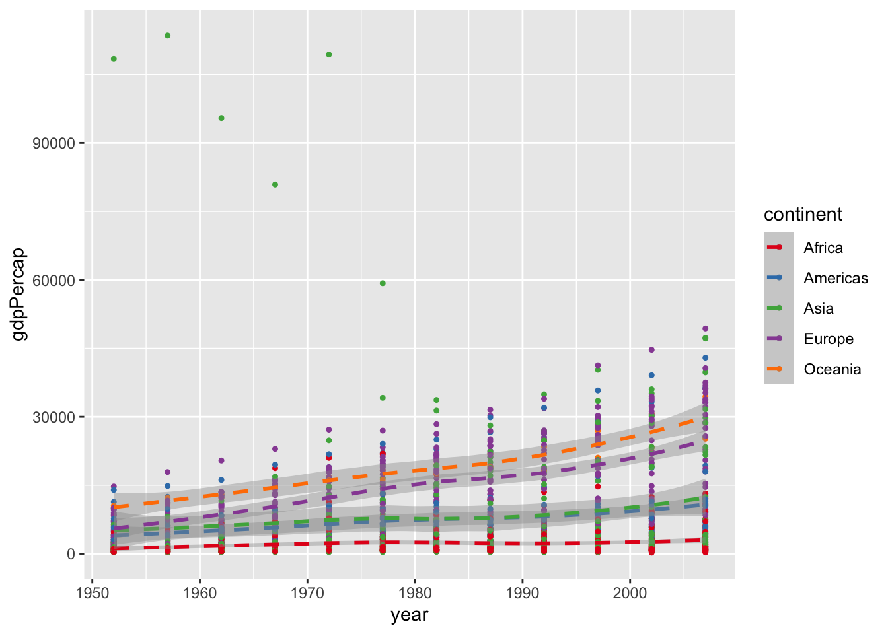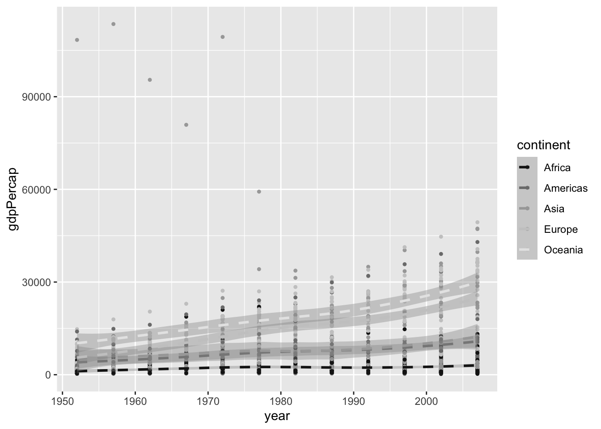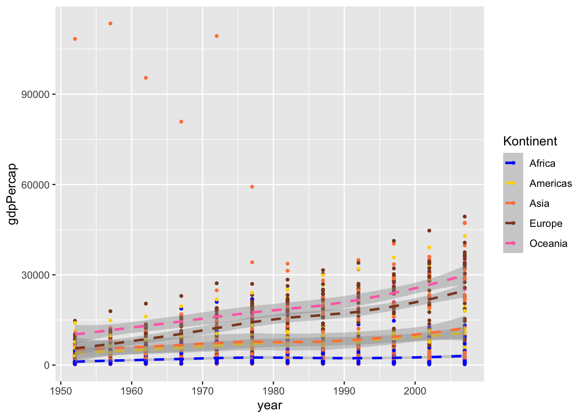
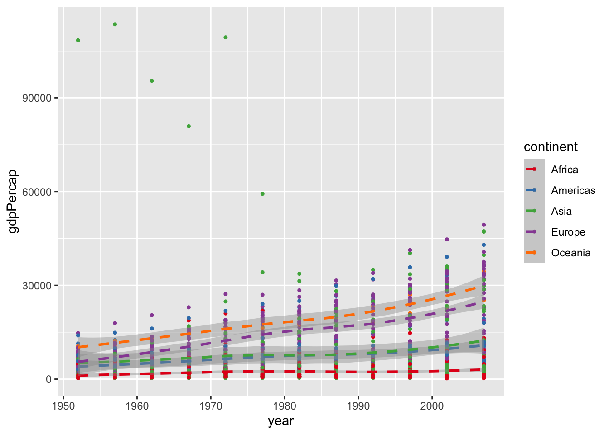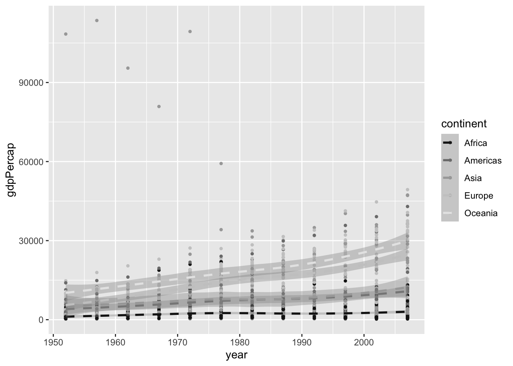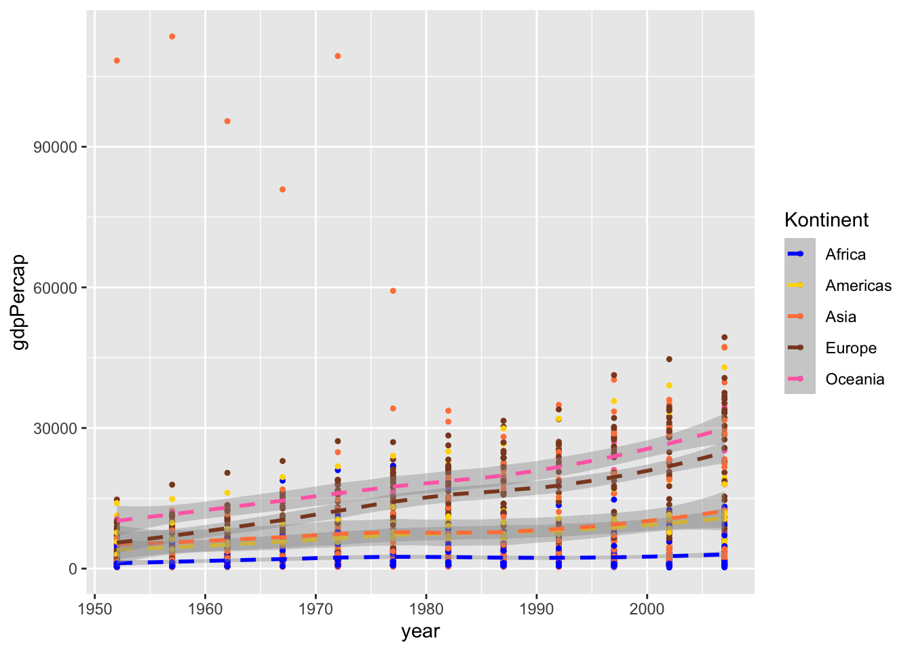
In diesem Beispiel haben wir also die Farbe über eine vorgegebene Palette, in Grau-Stufen bzw. manuell gewählt. Im letzten Beispiel haben wir zusätzlich noch den Titel der Legende geändert über das name Argument.
Die Achsenbeschriftung der y-Achse ist nicht wirklich schön, weil nicht unbedingt selbsterklärend. Daher ändern wir im nächsten Schritt die Achsenbeschriftung.
> p <- p + scale_colour_manual(values = c("blue", "gold", "sienna1", "sienna4", "hotpink1", "hotpink4"))
>
> p + scale_y_continuous("GDP pro Kopf")
## `geom_smooth()` using method = 'loess' and formula 'y ~ x'Da es sich bei gdpPercap um eine stetige Variable handelt, haben wir scale_y_continuous() verwendet (im Gegensatz zu scale_y_discrete()) um die Achsenbeschriftung zu ändern. Über die Hilfsfunktion labs() können wir die Beschriftung der Grafik aber auch einfacher/intuitiver ändern.
> (p <- p + labs(x = "Jahr", y = "GDP pro Kopf",
+ title = "Monoton steigendes GDP pro Kopf",
+ subtitle = "Gestrichelte Linie zeigt Durchschnittswerte über alle Länder pro Kontinent"))
## `geom_smooth()` using method = 'loess' and formula 'y ~ x'Die frühen Kuwait-Beobachtungen ziehen die y-Achse stark auseinander. Daher könnte man etwas in den Plot hinein zoomen wollen. Dazu kann man das Koordinatensystem anpassen übercoord_cartasian(). Alternativ könnte man auch mit der Funktion ylim() arbeiten (analog existiert natürlich auch xlmin()). Verwendet man xlim() bzw. ylim(), so werden alle Datenpunkte, die nicht im zu plottenden Bereich liegen, aber nicht nur nicht gezeichnet, sondern auch aus dem Datensatz (für diesen einen Plot) entfernt. Dies hat Auswirkungen auf Teile des Plots, die auf statistische Transformationen basieren, die mithilfe der vorhanden Daten berechnet wurden.
> p + ylim(0,55000)
## `geom_smooth()` using method = 'loess' and formula 'y ~ x'
## Warning: Removed 6 rows containing non-finite values
## (stat_smooth).
## Warning: Removed 6 rows containing missing values
## (geom_point).
> (p <- p + coord_cartesian(ylim = c(0, 55000)))
## `geom_smooth()` using method = 'loess' and formula 'y ~ x'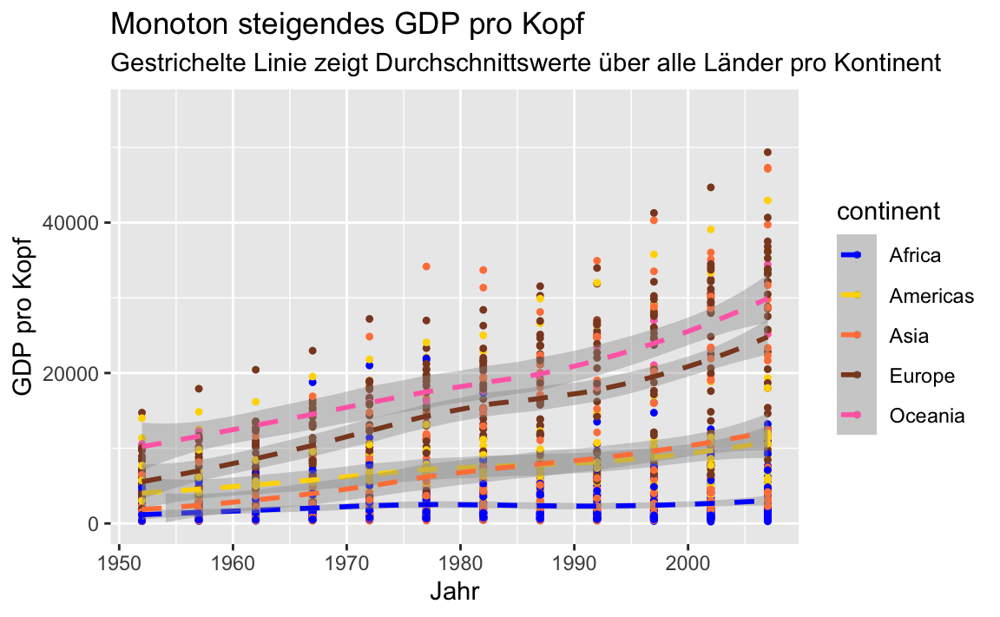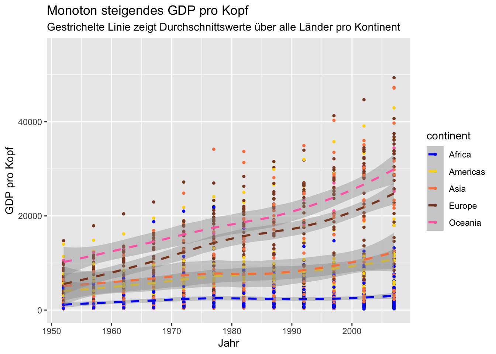
In der rechten Grafik ist der Verlauf der Kurven unverändert. In der linken Grafik hingegen liegt die Kurve für Asien nun deutlich unter der Kurve für Amerika bis Mitte der 80er Jahre.
Andere mögliche Positionsänderungen ergeben sich durch Skalierungen der Achsen wie scale_x_log10(), scale_y_sqrt() oder
> p + scale_x_reverse()
## `geom_smooth()` using method = 'loess' and formula 'y ~ x'Für weitere Optionen sei hier auf die online Version der neuesten Auflage von ggplot2 (Wickham 2009) verwiesen.
11.5 facets
Datensätze lassen sich oftmals bzgl. vorhandener Variablen gruppieren. Dann will man Zusammenhänge weiterer Variablen innerhalb dieser Gruppen darstellen. Entsteht die Gruppierung aufgrund einer Variable, so kannst du mit facet_wrap() arbeiten
> gapminder %>%
+ ggplot(aes(x = year, y = gdpPercap )) +
+ geom_point(size = 0.9) +
+ geom_smooth(linetype = 2) +
+ facet_wrap(~ continent, ncol = 2)
## `geom_smooth()` using method = 'loess' and formula 'y ~ x'In der letzten Grafik verwenden alle fünf Plots die gleiche Skala auf der y-Achse um die Vergleichbarkeit der Werte zu erhöhen. In manchen Fällen mag dies aber störend sein. Mit dem Argument scale kannst du die Skala “befreien”.
> gapminder %>%
+ ggplot(aes(x = year, y = gdpPercap )) +
+ geom_point(size = 0.9) +
+ geom_smooth(linetype = 2) +
+ facet_wrap(~ continent, ncol = 2, scales = "free")
## `geom_smooth()` using method = 'loess' and formula 'y ~ x'Erfolgt die Gruppierung anhand von zwei Variablen, so bietet facet_grid() eine passende Aufteilung des Grafikfensters. Neben dem Kontinent betrachten wir nun auch noch ob die Populationsgröße des Landes im entsprechenden Jahr größer als 5000000 ist, oder eben nicht.
> gapminder %>%
+ group_by(continent) %>%
+ ggplot(aes(x = year, y = gdpPercap )) +
+ geom_point(size = 0.9) +
+ geom_smooth(linetype = 2) +
+ facet_grid(continent ~ pop > 5000000, scales = "free")
## `geom_smooth()` using method = 'loess' and formula 'y ~ x'Für Ozeanien erhalten wir so z.B. eine Unterteilung in Australien (TRUE) und Neuseeland (FALSE).
11.6 themes
Abschließend wollen wir noch über verschiedene themes sprechen. Über themes kann man das Aussehen der nicht datenbezogenen Elemente einer Grafik verändern, wie z.B.
- die Beschriftungen
- den Hintergrund
- die Legende
- ….
Eine Reihe von themes sind bereits vorhanden, wobei theme_gray() das Default theme ist. Siehe auch ?theme_gray().
> p
## `geom_smooth()` using method = 'loess' and formula 'y ~ x'
> p + theme_bw()
## `geom_smooth()` using method = 'loess' and formula 'y ~ x'
> p + theme_dark()
## `geom_smooth()` using method = 'loess' and formula 'y ~ x'
> p + theme_minimal()
## `geom_smooth()` using method = 'loess' and formula 'y ~ x'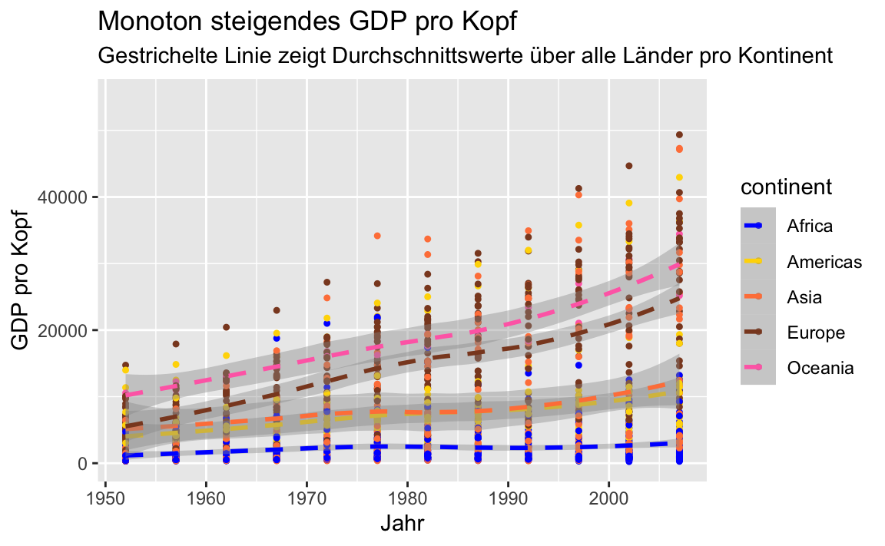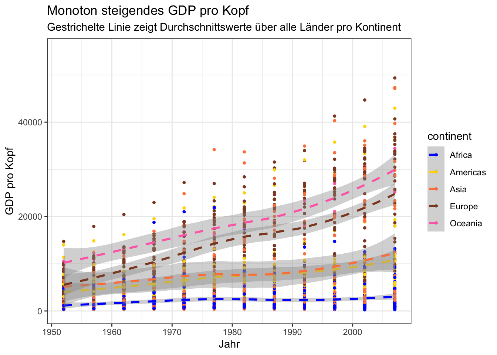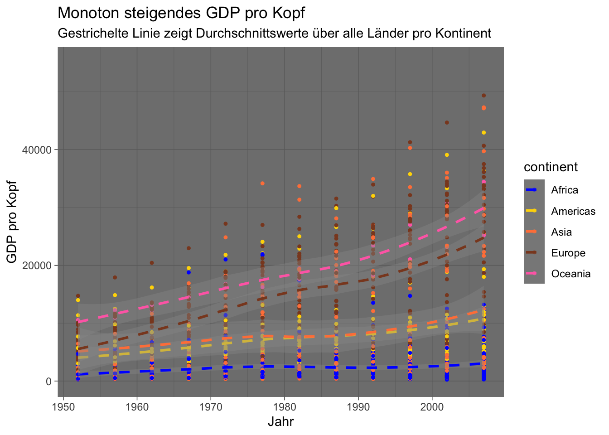
Wir möchten nun gerne folgende Änderungen an der Grafik vornehmen:
- die Größe der Achsenbeschriftung ändern
- die Gitterlinien ohne Beschriftung entfernen
- eine Überschrift hinzufügen
- die Legende in die Grafik verschieben
- die Hintergrundfarbe der Grafik und der Legende ändern
Die meisten dieser Änderungen können wir mit theme() durchführen.
> p +
+ theme(
+ axis.text = element_text(size = 14),
+ legend.key = element_rect(fill = "navy"),
+ legend.background = element_rect(fill = "green"),
+ legend.position = "bottom",
+ panel.grid.major = element_line(colour = "grey40"),
+ panel.grid.minor = element_blank(),
+ panel.background = element_rect(fill = "navy")
+ )
## `geom_smooth()` using method = 'loess' and formula 'y ~ x'Ob das nun alles schön aussieht, sei dahingestellt, aber es zeigt durchaus die vorhandenen Möglichkeiten.
Will man gewisse Einstellung öfter verwenden, so kann man diese auch in einem theme Objekt speichern und wiederverwenden.
> mein_theme <- theme(
+ axis.text = element_text(size = 14),
+ legend.key = element_rect(fill = "hotpink3"),
+ panel.grid.major = element_line(colour = "grey40"),
+ panel.grid.minor = element_blank(),
+ panel.background = element_rect(fill = "navy")
+ )
> class(mein_theme)
## [1] "theme" "gg"> p + mein_theme
## `geom_smooth()` using method = 'loess' and formula 'y ~ x'11.7 Buch zum Paket
Dieser Abschnitt konnte nur einen kleinen Einblick in die Möglichkeiten des ggplot2 Pakets geben. Eine ausführliche Beschreibung findet man im Buch zum Paket.